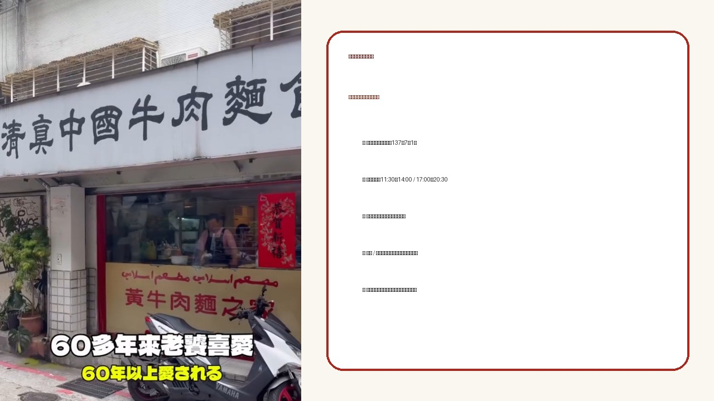
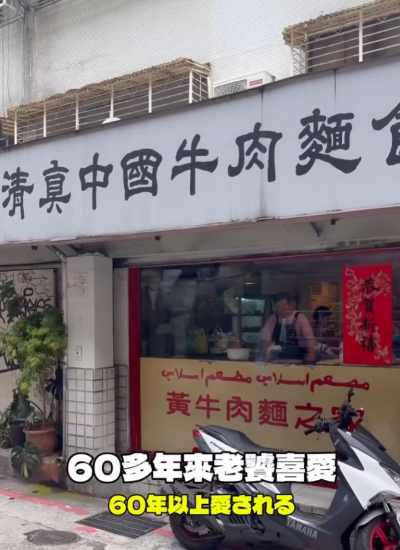

LINE｜清真中國牛肉麵食館：延吉街巷弄裡的老字號牛肉麵

為什麼保存
這則內容值得放進生活雷達，因為它不是單純的「氣氛店」推薦，而是明確指向台北延吉街一帶很有代表性的老字號牛肉麵：**清真中國牛肉麵食館**。分享文字強調三個重點：用餐時間店裡幾乎不停、湯頭濃郁但不膩、牛肉燉得軟嫩，麵條也能吸附湯汁。
圖片中的店面招牌可辨識「清真中國牛肉麵食館」，窗面另有「黃牛肉麵之家」字樣；影片字幕寫著「60多年來老饕喜愛 / 60年以上愛される」，適合作為這則食記的主圖。

原文重點
中文分享文：
> 一天不知道要賣幾碗，但一到用餐時間，店裡真的沒停過！
> 延吉街這家牛肉麵，湯頭濃郁卻不會太膩，牛肉燉到很嫩，麵條吸附湯汁，每一口都很順。
> 不是那種只吃氣氛的店，而是真的會讓人想再回訪的味道。
日文版本也同樣強調：午餐時段客人不斷、湯濃但不重、牛肉柔軟、麵條能把湯汁帶起來，是會想再訪的味道。
店家資訊
| 項目 | 資訊 |
|---|---|
| 店名 | 清真中國牛肉麵食館（大安 / 忠孝總店） |
| 地址 | 台北市大安區延吉街137巷7弄1號 |
| 電話 | 02-2721-4771 |
| 常見營業時間 | 11:30–14:00、17:00–20:30 |
| 公休 | 週三公休 |
| 鄰近交通 | 捷運國父紀念館站 / 忠孝敦化站步行可達，實際路線依出發點而定 |
提醒：營業時間、價格與品項會變動，出發前建議再看 Google Maps 或店家最新公告。
吃什麼
公開食記與搜尋資料常見推薦方向：
- **清燉牛肉麵**：多篇食記都把清燉湯頭列為招牌，特色是看起來清澈但牛味明顯。
- **紅燒牛肉麵**：想要更厚重湯底可以選紅燒。
- **半筋半肉 / 牛筋類品項**：若當天供應且喜歡膠質口感，可以優先考慮。
- **東北斤餅**：這家不只牛肉麵，斤餅與京醬牛肉絲也常被提到。
- **小菜 / 熱炒**：適合多人一起點，單人則可專注牛肉麵。
價格參考：公開食記曾提到基本牛肉麵約 175 元、招牌類約 205 元上下，但不同年份與平台價格會變動，本文不固定標價，實際以現場菜單為準。
口味筆記
分享文給出的味覺關鍵很清楚：
- **湯頭濃郁但不膩**：不是薄湯，也不是喝幾口就負擔太重的油厚感。
- **牛肉燉得嫩**：主軸不是只靠湯，而是肉本身也有回訪理由。
- **麵條吸湯**：表示湯與麵的搭配順，不是各自分離。
- **用餐時間人潮穩定**：適合避開尖峰，否則可能要排隊或等位。
適合誰
- 喜歡台北老字號牛肉麵的人。
- 想找大安 / 國父紀念館 / 延吉街一帶正餐的人。
- 偏好清燉牛肉湯、但又不想喝到過度厚重油膩湯頭的人。
- 想順便點北方麵食、斤餅或熱炒一起吃的人。
注意事項
- 用餐尖峰可能人潮多，建議提早或避開正午 / 晚餐熱門時段。
- 店面屬巷弄老店型態，座位與環境可能不如新式餐廳寬敞。
- 清真相關資訊以店家當下標示與認證為準；若有嚴格飲食需求，建議事先致電確認。
- 米其林 / 必比登推薦狀態每年可能變動，本文只保存公開食記與分享當下脈絡，不視為永久認證。
來源查核
- 欒帥補充的 LINE 文字與店面圖片。
- 包子爸の食尚攝影手札食記：記載店址、電話、營業時間與清燉 / 紅燒牛肉麵、斤餅等品項。
- 鄉民食堂食記：記載地址、電話、營業時間、週三休，以及清燉湯頭與價格區間的歷史參考。